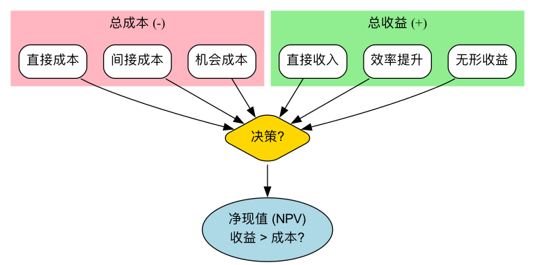

成本效益分析¶
在商业世界乃至公共政策领域，几乎每一个决策的背后，都隐藏着一个根本性的权衡：我们为了得到某种收益（Benefit），愿意付出多大的成本（Cost）？成本效益分析（Cost-Benefit 分析, CBA） 正是这样一个系统性的、以货币为统一量纲的决策框架，其核心目标在于，通过全面地识别、量化并比较一个项目或决策所带来的全部成本和全部收益，来判断该项目是否“值得做”，并为在多个备选方案中进行选择提供理性的经济依据。
成本效益分析的逻辑直截了当：如果一个项目的总收益大于其总成本，那么它在经济上就是可行的、有效率的。它迫使决策者超越那些模糊的定性描述，将所有相关的正面和负面影响，都尽可能地转化为可比较的货币价值。从评估一项新的政府基建项目，到企业决定是否投资一套新的IT系统，成本效益分析都是进行资源配置和投资决策时不可或缺的理性工具。
成本与效益的构成¶
进行一次全面的成本效益分析，需要识别出所有相关的成本和效益，这其中既包括显性的，也包括隐性的。

如何进行一次成本效益分析¶
-
第一步：明确项目与备选方案
清晰地定义你正在评估的项目或决策是什么。如果存在多个备选方案，需要对每一个方案都独立进行成本效益分析。
-
第二步：全面识别所有成本与效益
与所有相关的利益方（Stakeholders）进行头脑风暴，尽可能全面地列出该项目可能带来的所有正面和负面影响。在这一步，要特别注意那些容易被忽略的无形成本和间接收益。
-
第三步：将成本与效益货币化
这是CBA中最具挑战性的一步。你需要为清单上的每一项成本和效益，赋予一个合理的货币价值。对于直接成本和收益，这相对容易。但对于无形成本和收益（如“客户满意度提升”），则需要借助一些估值技术，例如，通过市场调查来估算客户愿意为更好的服务多付多少钱，或者计算客户流失率下降所挽回的损失。
-
第四步：考虑时间价值，进行贴现
由于未来的钱不如今天的钱值钱，对于一个跨越多年的项目，必须将未来发生的成本和收益，通过一个预设的贴现率（Discount Rate），折算成今天的现值（Present Value）。这确保了所有成本和收益都在一个可比的时间基准上。
-
第五步：计算关键决策指标并进行比较
汇总所有成本和收益的现值，并计算以下一个或多个关键指标： * 净现值（Net Present Value, NPV）：总收益现值 - 总成本现值。如果 NPV > 0，项目在经济上就是可行的。在多个方案中，通常选择NPV最高的那个。 * 效益成本比（Benefit-Cost Ratio, BCR）：总收益现值 / 总成本现值。如果 BCR > 1，项目可行。这个比率在比较不同规模的项目时很有用。 * 投资回报率（Return on Investment, ROI）：(总收益 - 总成本) / 总成本 × 100%。直观地显示投资的盈利能力。 * 投资回收期（Payback Period）：项目累计收益等于初始投资所需的时间。
-
第六步：进行敏感性分析并做出建议
由于很多估算（尤其是对无形项的估算和贴现率的选择）都存在不确定性，因此需要进行敏感性分析。即，改变一些关键的假设（如“如果销售增长比预期低20%会怎样？”），观察其对最终结果（如NPV）的影响。最后，基于所有分析，向决策者提出清晰的、有数据支持的建议。
应用案例¶
案例一：企业决定是否升级其ERP系统
- 成本：
- 直接成本：软件采购费、硬件升级费、外部咨询和实施费用、员工培训费。
- 无形成本：系统切换期间可能导致的短期生产力下降、员工对新系统的抵触情绪。
- 收益：
- 直接收益：通过自动化流程节约的人力成本、通过优化库存降低的资金占用成本。
- 间接收益：数据准确性提高，决策效率提升。
- 无形收益：客户订单处理速度加快，客户满意度提升。
- 分析：通过将以上各项在未来5年内的发生额进行货币化和贴现，计算出该项目的NPV。如果NPV为正，则投资是值得的。
案例二：政府评估是否修建一条新的高速公路
- 成本：
- 直接成本：土地征用费、工程建设费、未来数十年的维护费用。
- 无形成本：对沿线自然环境的破坏、拆迁导致的社会问题、施工期间的噪音和交通拥堵。
- 收益：
- 直接收益：过路费收入。
- 间接收益：沿线居民和企业节省的运输时间和运输成本、带动的区域经济发展和就业增长。
- 无形收益：交通事故率下降带来的生命价值挽回。
- 分析：公共项目的CBA尤其复杂，因为需要对“生命价值”、“环境价值”等进行公共政策领域的专业估算。最终的效益成本比（BCR）是决定项目是否上马的关键依据。
案例三：个人决定是否要读一个全日制MBA
- 成本：
- 直接成本：高昂的学费、书本费、生活费。
- 机会成本：攻读MBA期间（通常为两年）所放弃的全部薪水收入（这往往是最大的一项成本）。
- 收益：
- 直接收益：毕业后预期薪资的显著增长。
- 无形收益：获得的知识和技能、强大的校友网络、个人品牌的提升。
- 分析：候选人可以通过估算自己整个职业生涯的现金流（读MBA vs. 不读MBA），并计算其净现值，来判断这项“自我投资”是否划算。
成本效益分析的优势与挑战¶
核心优势
- 理性与数据驱动：为决策提供了一个清晰、理性的经济比较框架，减少了主观臆断。
- 全面性：迫使决策者思考一个项目所带来的所有正面和负面影响，而不仅仅是那些最明显的。
- 资源优化：有助于将有限的资源分配给那些能产生最大净收益的项目上。
潜在挑战
- 货币化的困难：最大的挑战在于如何为那些无形的、非市场的项目（如“品牌声誉”、“环境保护”、“生命价值”）赋予一个公平、可信的货币价值。这个过程往往充满争议。
- 预测的准确性：分析结果高度依赖于对未来成本和收益的预测，而这些预测本身就充满不确定性。
- 忽略公平性问题：CBA主要关注的是整体的经济效率，有时可能会忽略成本和收益在不同人群之间的分配是否公平的问题。
延伸与关联¶
- 决策矩阵：当决策标准无法完全被货币化时，决策矩阵提供了一个更灵活的替代方案。
- 成本效果分析（Cost-Effectiveness 分析, CEA）：当项目的收益很难被货币化（如医疗健康领域），但其效果可以被一个统一的非货币单位（如“成功治愈的病人数”、“延长的生命年”）来衡量时，可以使用CEA。它计算的是“达到一个单位效果需要花费多少成本”。
来源参考：成本效益分析的思想最早可以追溯到19世纪法国工程师朱尔·迪普伊（Jules Dupuit）对公共工程项目的评估。在20世纪，它被广泛应用于英美等国的公共政策评估，并成为项目管理和企业投资决策中的核心工具。